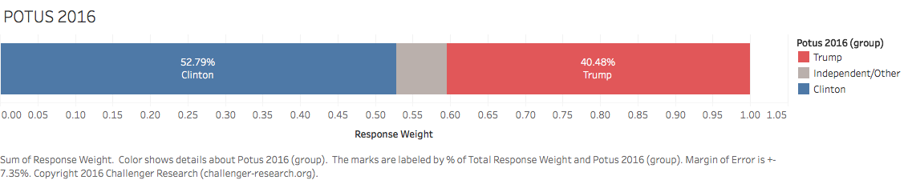
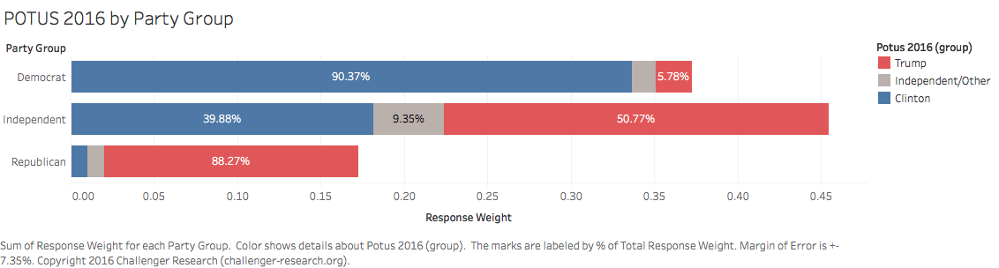
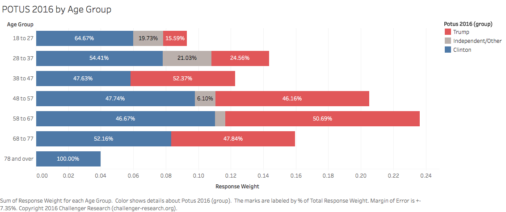
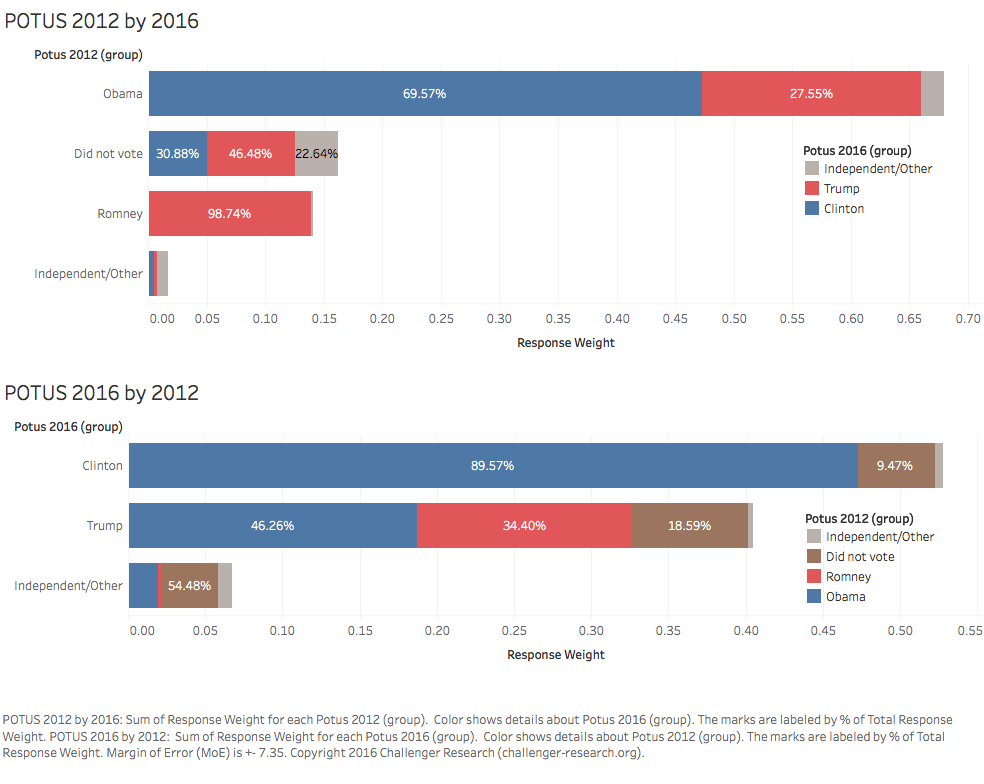

Challenger Research conducted an SMS-based survey of registered likely voters from Branford, Connecticut between Wednesday, November 2, 2016 and Thursday, November 3, 2016.
| Order | Title | Text Excerpt |
|---|---|---|
| 1 | Likely Voter | Are you likely to vote in the Presidential Election on Tuesday, November 8? Please reply 'Yes' or 'No'. |
| 2 | POTUS 2016 | Do you mind sharing who you're going to vote for in the 2016 Presidential Election? Please reply: 'Clinton', 'Trump', 'Johnson', 'Stein', or 'Other' [RANDOM ORDER]. |
| 3 | POTUS 2012 | Thinking back to the 2012 Presidential Election, who did you vote for? Please reply 'Obama', 'Romney', 'Other', or 'Did not vote'. |
Results from the survey indicate Hillary Clinton will win the town with a slight majority of votes (53% compared to Donald Trump's 40%).
While each candidate earns around 90% support from their respective parties, Trump wins the Independent vote by a narrow majority (51% to Clinton's 40%).
The race is tight within most age groups, but Trump underperforms with voters under 38 years of age. The widest margin of Clinton support comes within the youngest age group (voters under 28 years of age).
Clinton draws almost no support from Romney 2012 voters, while Trump draws one third of his support from Obama 2012 voters. Trump receives more support from voters who did not vote in 2012 than does Clinton.
@ChallengerPoll showed HRC winning the town of Branford, CT with 53% to Trump's 40%. Actual results: 54% to 42%. #Polling pic.twitter.com/JedzCP5l0U
— MJ Rossetti (@s2t2) November 9, 2016
Active registered voters who had produced a valid form of identification.Party and Age demographics. The sample excluded voters who did not list a phone number and voters who listed the same phone number as another voter.Party and Age demographics before being analyzed and compiled into final results.{kind=link}